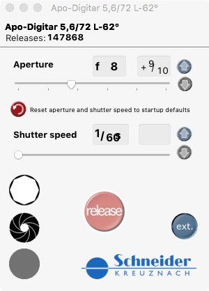
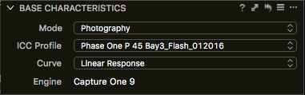
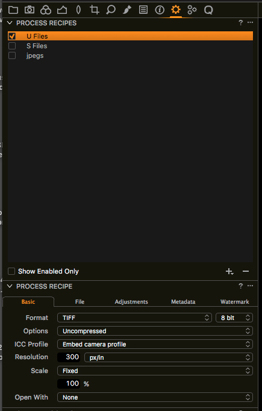
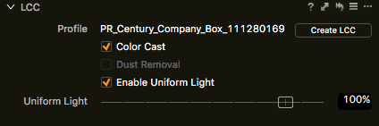
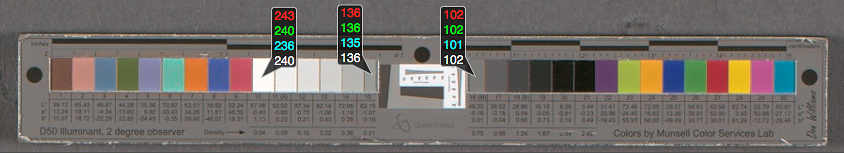

QUICK START GUIDE for DIU Collections Photographers
- Approach to loose manuscript materials -
Version created: June 2018
1. Turn on computer to allow monitor to warm up
2. Turn on Profoto power pack
a. For standard reflective digitization: keep the lights at the same output power, match the height & angle of the lights, as well as the distance to the edges of copy stand tabletop
i. Light height: approx. 75” (to pin)
ii. Angle of lights: approx. 70 degrees (or 20 degrees - depending on orientation of angle-finder)
iii. Approximate distance to edge of tabletop: approx. 50 inches
3. Turn on Phase One Digital Back
4. Open Capture One software
5. Open Schneider Shutter Control
a. Except for Bay 3, which uses manual controls with the Rollei Lens Control S)

6. Sign in to Trello and find card for materials/project to be worked on, within “Materials Received”
a. i.e. “Century_Company_Box_104”
7. Move Trello card from “Materials Received” to the camera bay where digitization will take place (i.e. Bay 3 Rollei P45)
a. Add yourself as a member to the card
8. Sign in to MMS and open Work Order from link within the Trello card
a. You should be directed to the Work Order that matches the materials
b. If not, do a search for “Century_Company_Box_104” under the Work Orders tab
i. Update work order link within Trello Card if needed
c. Add yourself as photographer (by clicking “edit” under Photographer)
9. Create a new Session in Capture One with name of Work Order
a. Use no spaces, but use underscores and add your initials to the beginning (i.e. PR_Century_Company_Box_104)
b. This naming convention will aid in smooth uploads to the server, as well as the repo check workflow - allowing photographers to easily determine the sessions owner
10. Set-up captures within Capture One based on resolution specified for each project (i.e. Century Company records worked on across various workstations use a similar PPI/Resolution of approximately 520ppi)
a. Choose appropriate background (in the case of Century, we use gray)
b. Confirm that ISO is set to the “base ISO” for particular Phase One digital back (unless otherwise decided upon or noted)
i. Bay 3 Rollei P45 uses ISO 100
ii. Note: BC100/Book Scanner with P40+ backs use ISO 200 (for increased shutter speed)
c. Under Base Characteristics, choose Linear Scientific (choose Linear Response on older digital backs - such as Bay 3 Rollei P45)

d. Set Process Recipe to: U File (so that ICC profile is set for: embedded camera profile)

e. Confirm that Sharpening uses DIU standard: Amount = 100, Radius = 1.0, Threshold = 1

f. Use Golden Thread target to initially determine PPI/Resolution (and aid for initial focus)
g. Use 5-point focus aids for fine tuning, as needed (graphite pencil patterns on white paper provides nice texture and contrast for focus aids)
h. Create LCC (once focus and lighting is set)

i. Set white point on target, with a RGB readout visible (RGB values for white point should hit 240, + or - 3 points)
j. Set white balance (RGB values fall within 1 point of each other in all three channels when measured on patch 15 or 16)

11. If working with a two-monitor workstation, it can be helpful to use the second monitor for: viewing the Work Order in MMS, for the Schneider Shutter Control window or having an additional Viewer window in Capture One for 100% viewing to check focus or for page number reference, etc.
12. You should now be set-up for the basic capture workflow for loose manuscript materials
13. Enjoy the process and fine tune the workflow to what works best for you!
Note : If you encounter materials of interest that you would like to share with your DIU colleagues and/or have added to monthly Digital report highlights by the Manager, please process out anywhere from 1 - 10 captures as JPEGS (ICC profile set to: sRGB) with the long dimension set to 2000 pixels (using the “jpegs” Process Recipe)
Sign in to Slack and add your images to the #DIU channel, with descriptions or project info as you like